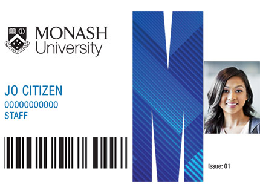

Printing, Scanning, and Copying
Standard and colour printing, photocopying and scanning are available at all libraries. To print or copy in the Library, you need a Monash student identity card or a Library membership card. Library printing has changed to the new single printing service called M-Pass.

The M-Pass system is university-wide, meaning that Library printing is the same as computer lab printing across all campuses.
You can top up online, use that credit to print anywhere at any campus, and view your usage summary online. All you need is your Monash ID card, or to log in at the machine with your Monash username and password.
Printing costs
Find out how much it costs to print - go to the Printing costs page.Please note that colour printing and photocopying are charged at a higher rate even if your document contains no colour. Print settings default to Mono (black/white) and double sided.
Scanning can be done for free using the photocopiers but note that scanning as well as photocopying in the Library are subject to Copyright law.